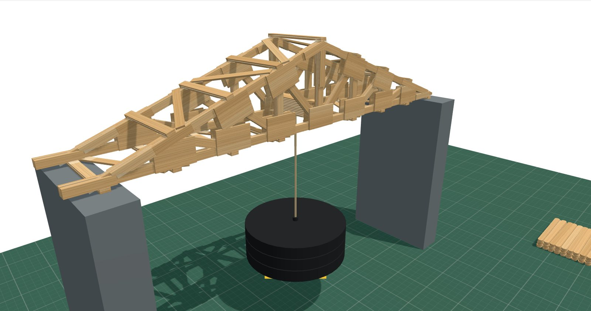
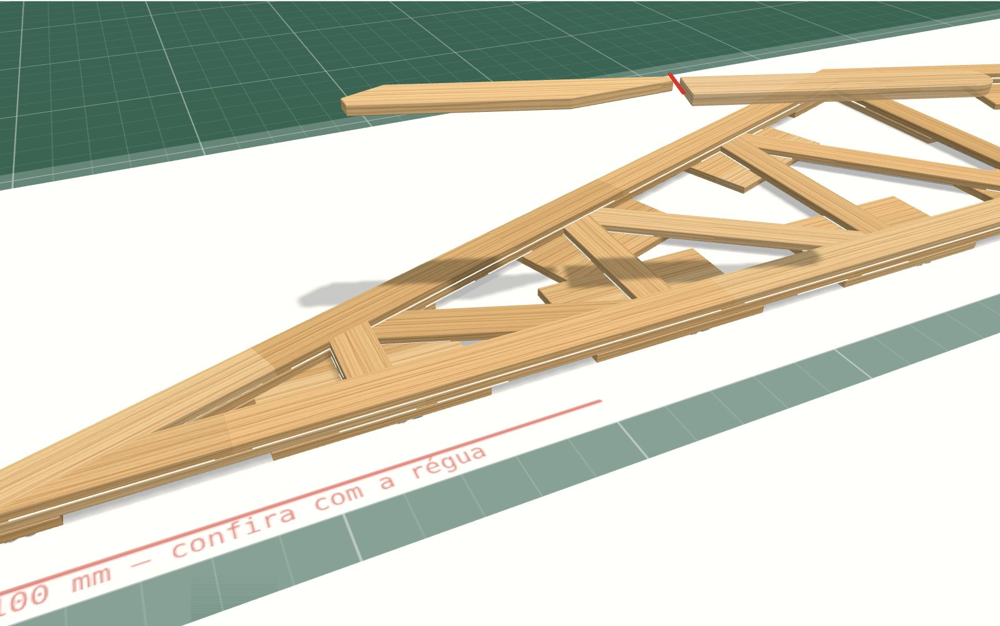
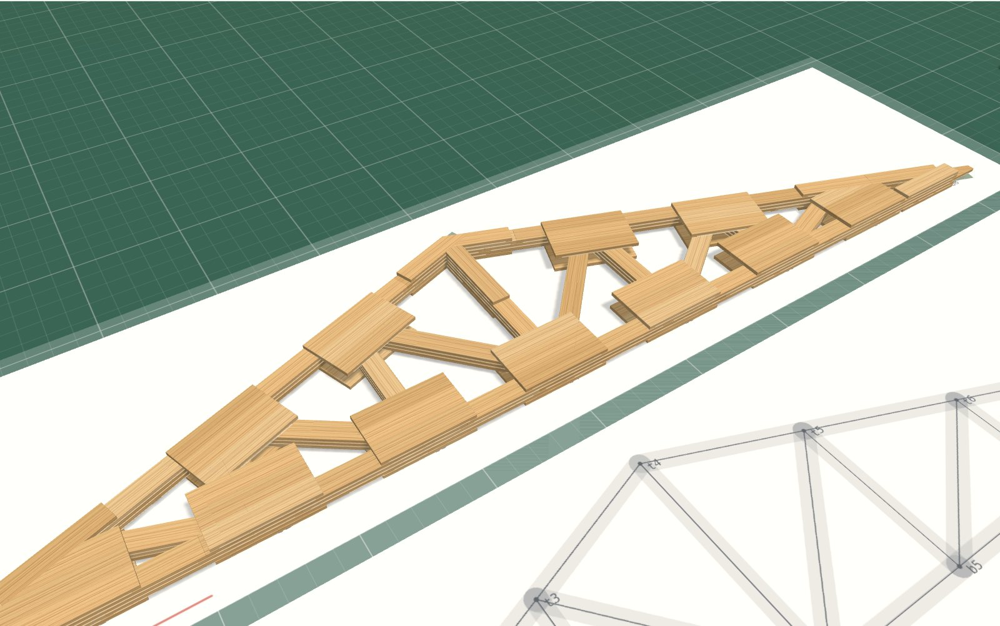
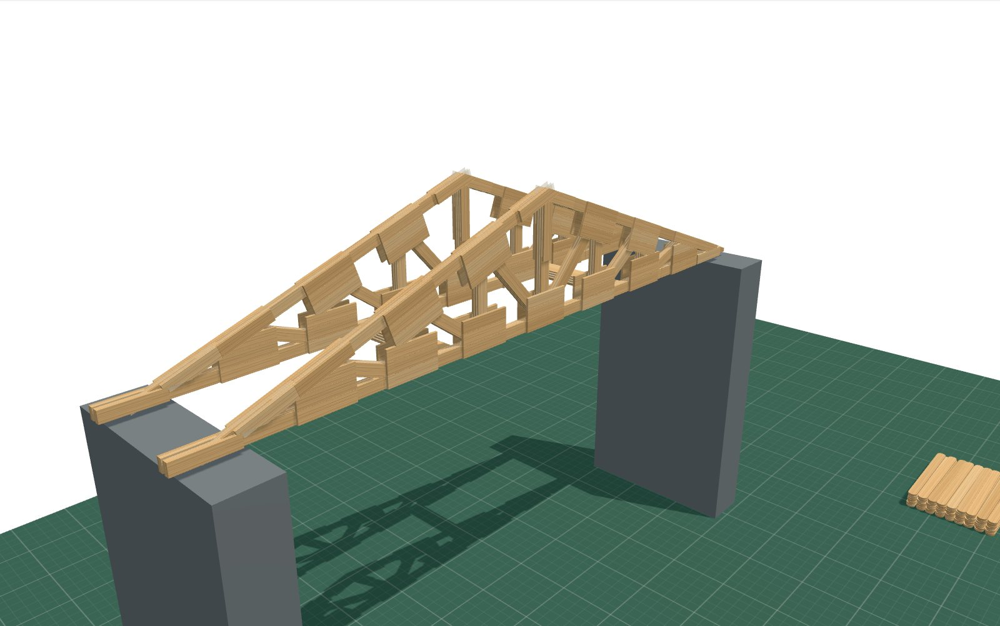
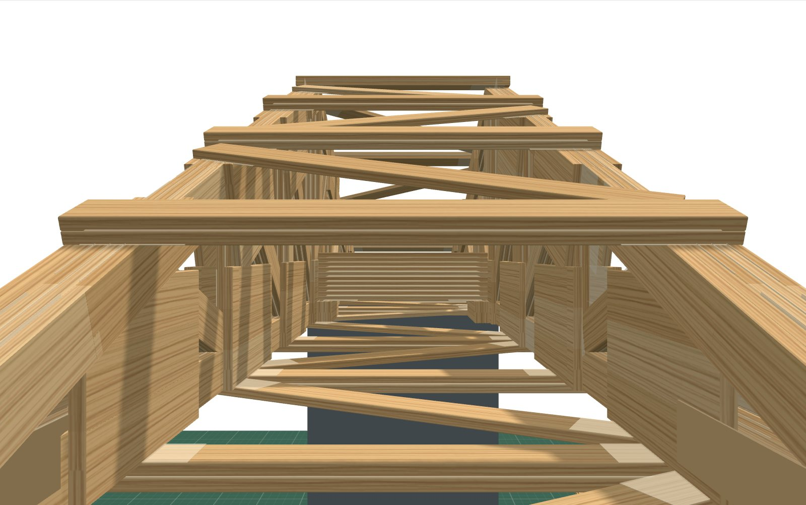

Uma ponte de palito que aguenta 45 kg
Ela tem 50 cm entre os apoios, é feita só com palitos de picolé e cola branca e pesa cerca de 223 g. O cálculo mostra que ela segura 45 kg pendurados no meio: mais de 200 vezes o próprio peso.

Como ela funciona
A ponte é uma treliça: um conjunto de triângulos. Triângulo não deforma, então o peso do meio se divide pelas barras até chegar aos apoios. Cada barra trabalha de um jeito só: ou é esticada ou é apertada.
A parte de cima, em vermelho, é a mais difícil: barra apertada tende a entortar de lado, como uma régua empurrada pelas pontas. Por isso cada barra tem três palitos colados e as duas laterais da ponte são travadas entre si por cima e por baixo.
Por que esse formato
Antes de escolher, o computador testou 208 formatos de treliça e calculou quantos palitos cada um precisa para aguentar a carga com folga de segurança. Os melhores de cada família:
O formato escolhido (Parker) tem o topo em triângulo, que acompanha o jeito como o peso do meio "puxa" a ponte. Ele gasta quase o mesmo tanto de palito que o melhor, mas nenhuma barra é maior que um palito, então não precisa de emendas, que costumam ser o ponto fraco.
Como vai ser montada
Cada peça tem número e código
São 412 peças em 37 formatos diferentes, como num manual de LEGO. Cada uma é cortada no tamanho e no ângulo certos, usando moldes impressos em tamanho real.

As laterais são montadas deitadas
Cada lateral é montada sobre um desenho em tamanho real, em três camadas de palitos, com cola branca entre elas. Depois fica 24 h prensada para a cola secar.

As duas laterais ficam de pé e são travadas
Espaçadores de palito seguram as duas laterais paralelas enquanto são coladas as peças de baixo, de cima e as diagonais que travam tudo.

Dá para passear por dentro dela
No modelo 3D você gira, aproxima e até "voa" por dentro da ponte para ver cada palito, com o número de cada peça.

O teste
A ponte ainda vai ser construída e testada. Quando o teste acontecer, as fotos, o vídeo e quanto peso ela realmente aguentou vão aparecer aqui.